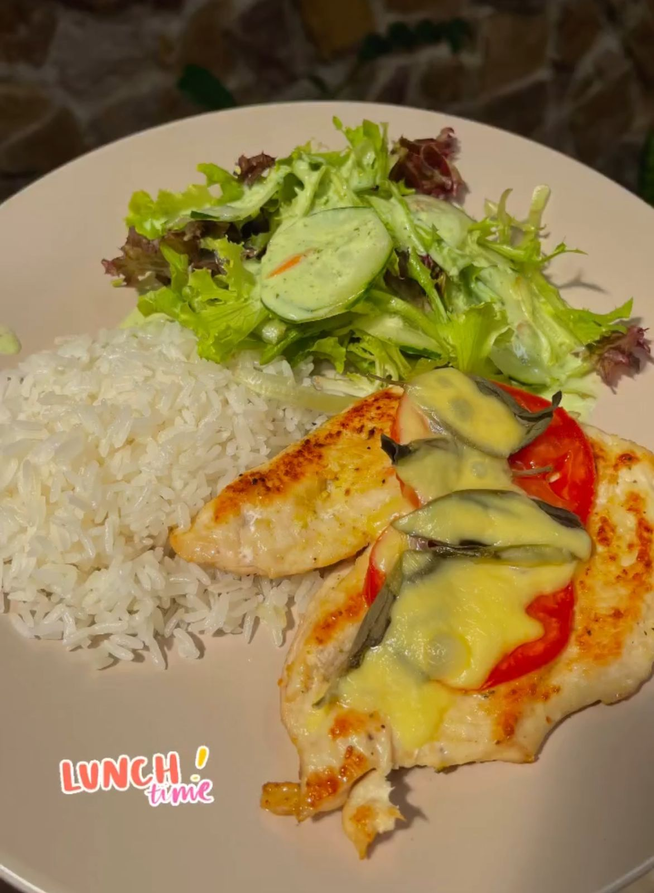
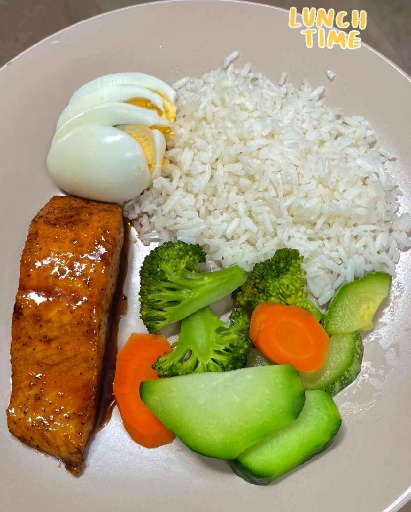
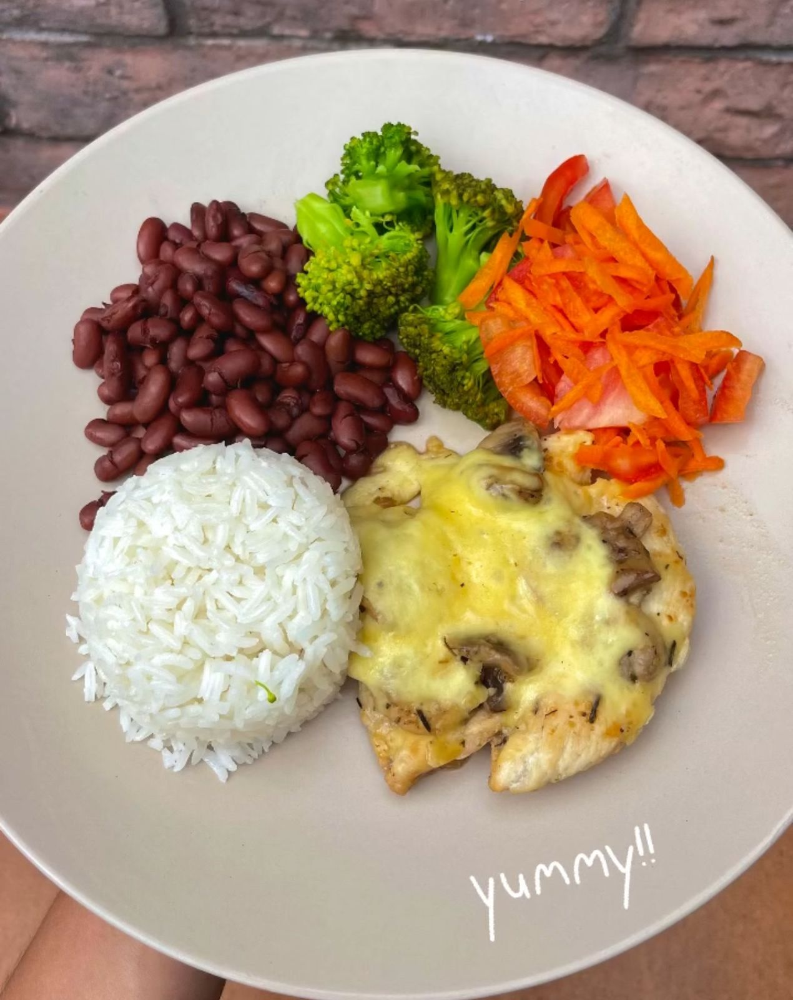

Lunch is essential to maintain energy and concentration during the day. Provides the necessary nutrients to replenish strength after the morning and stabilize blood glucose levels. A balanced lunch, with protein, complex carbohydrates, healthy fats and vegetables, improves performance at work and studies, prevents afternoon fatigue and helps control weight by reducing hunger and cravings for unhealthy foods. In short, a good lunch is key to a balanced diet and optimal general well-being.
Chicken and Salad
Ingredients
- 1 portion of chicken
- rice
- Salad
- Melted cheese with tomato
Boiled egg with salmon
Ingredients
- portion of salmon
- 2 boiled eggs
- Rice
- vegetables
Chicken and beans
Ingredients
- Chicken with mushrooms and cheese
- Beans
- Rice
- Vegetables